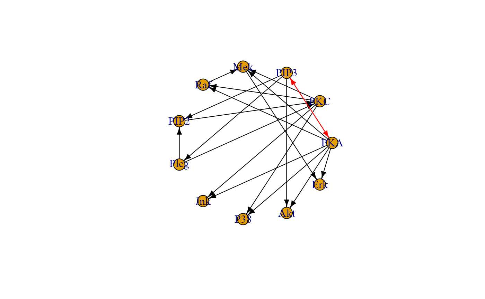
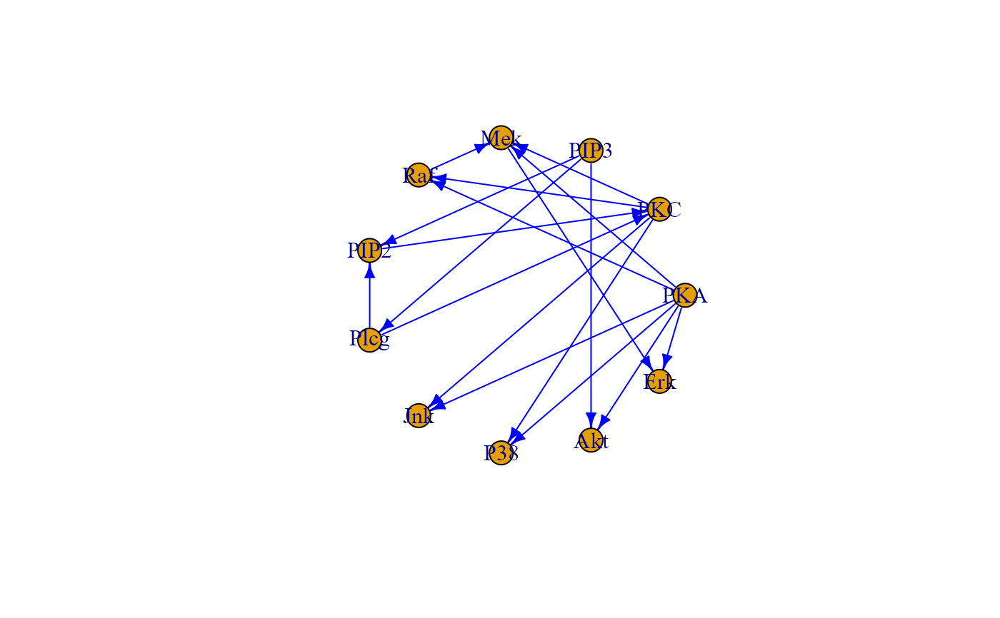

Convert a model, specified using lavaan syntax, to a graph object in either igraph or dagitty format.
lavaan2graph(
model,
directed = TRUE,
psi = TRUE,
format = "igraph",
verbose = FALSE,
...
)Model specified using lavaan syntax.
Logical value. If TRUE (default), edge directions from the model will be preserved. If FALSE, the resulting graph will be undirected.
Logical value. If TRUE (default) covariances will be converted into bidirected graph edges. If FALSE, covariances will be excluded from the output graph.
Output graph format. It can be either "igraph" (default) or "dagitty".
Logical value. If TRUE, a plot of the output graph will be generated. For large graphs, this could significantly increase computation time. If FALSE (default), graph plotting will be disabled.
Currently ignored.
An igraph object.
# Writing path diagram in lavaan syntax
model<-'
#path model
Jnk ~ PKA + PKC
P38 ~ PKA + PKC
Akt ~ PKA + PIP3
Erk ~ PKA + Mek
Mek ~ PKA + PKC + Raf
Raf ~ PKA + PKC
PKC ~ PIP2 + Plcg
PIP2 ~ PIP3 + Plcg
Plcg ~ PIP3
#PKA ~ 1
#PIP3 ~ 1
# (co)variances
# PIP2 ~~ PIP3
'
# Graph with covariances
G0 <- lavaan2graph(model, psi = TRUE)
plot(G0, layout = layout.circle)

# Graph without covariances
G1 <- lavaan2graph(model, psi = FALSE)
plot(G1, layout = layout.circle)
